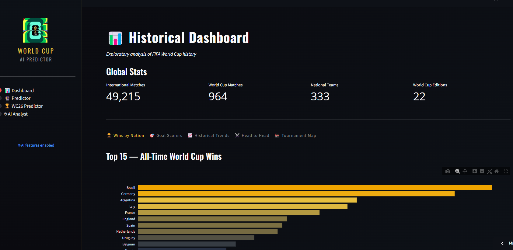

Proyecto Final · Data Science
FIFA World Cup 2026 AI Predictor
Pipeline de Data Science completo que predice resultados de partidos internacionales usando más de 150 años de datos históricos (49.000+ partidos). La app simula el Mundial 2026 entero — 48 equipos, 104 partidos, fase de grupos y eliminación directa — con análisis IA basado en estadísticas reales.
Python
XGBoost
TensorFlow
Streamlit
OpenRouter LLM
Plotly